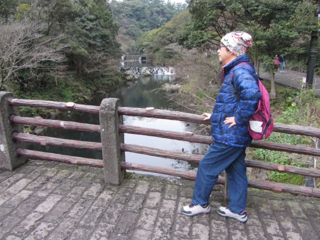

中午十二時五十弟離開李仲燮公園, 循李仲燮路往下, 接著朝海岸的方向走, 約下午一時半來到橫躺淵外川 (연외천)兩岸的七十里橋 (칠십리교)。天地淵瀑布就在橋的對岸。
走上七十里橋。
在橋上往左望, 白色的新緣橋 (새연교)就在不遠處, 稍後我們便往那裡遊覽。
走過十里橋, 穿過停車場, 便來到天地淵瀑布的入口。經過旅客咨詢中心, 又想起下車不拍 T-money 卡會罰款這問題, 雖然酒店服務員已經澄清了是不會的, 但好像仍然不放心, 畢竟網上太多人言之鑿鑿的說會罰款。
又走進旅客咨詢中心問服務員, 答案同樣是: 沒有下車不拍 T-money 卡會罰款這條例, 下車拍卡只是為了轉乘巴士優惠而已!
這時終於確實了: 下車不拍 T-money 卡是不會罰款的, 下車拍卡只是為了轉乘巴士優惠而已!
澄清了網上的謠言, 心情十分暢快。
接著往旅客咨詢中心旁的售票處, 買了兩張天地淵瀑布的門票, 每位是2,000韓元, 可以說是最抵消費。

進入天地淵瀑布, 走一會便來到淵外川 (연외천)畔。
沿淵外川畔走, 跨過一道石橋。
過了橋後, 繼續循步道向前走, 沿途有很多大大小小, 很可愛的石頭爺爺。
經過一間屋子, 原來是驗票口, 這時才知道這裡才是天地淵瀑布的正式入口。
接著沿淵外川的左岸走一會。左邊是一道連接淵外川兩岸的石階橋, 從這裡開始, 左岸是往天地淵瀑布, 右岸是回程的路。
繼續沿淵外川左岸向前一直走。
沿途風景不錯的。

穿過樹林, 天地淵瀑布就展現在眼前。可能不是雨季, 瀑布並不是太壯觀, 而且可拍攝的角度也不多, 只隨便拍了幾張到此一遊的照片便算了。
離開天地淵瀑布, 沿石橋走到淵外川的右岸。
沿淵外川右岸一直走。
穿過一個戶外表演場地。
接著跨過連接淵外川兩岸的石階橋, 又返回淵外川的左岸。
接著循原路走。離開前再同可愛的石頭爺爺拍照留念。

跨過石橋後, 便離開天地淵瀑布。